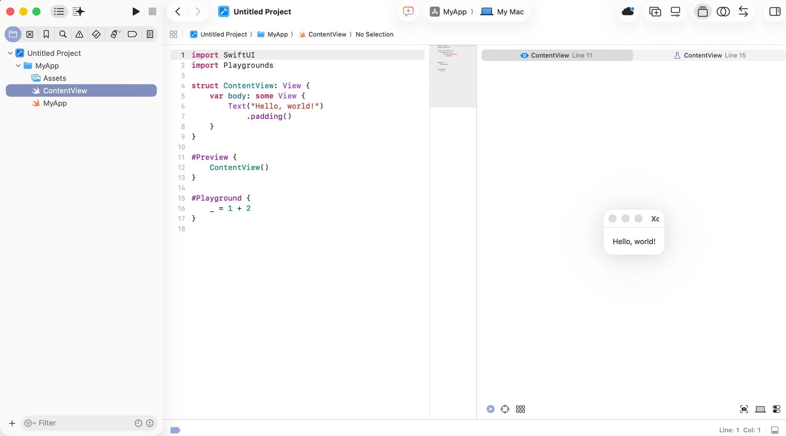
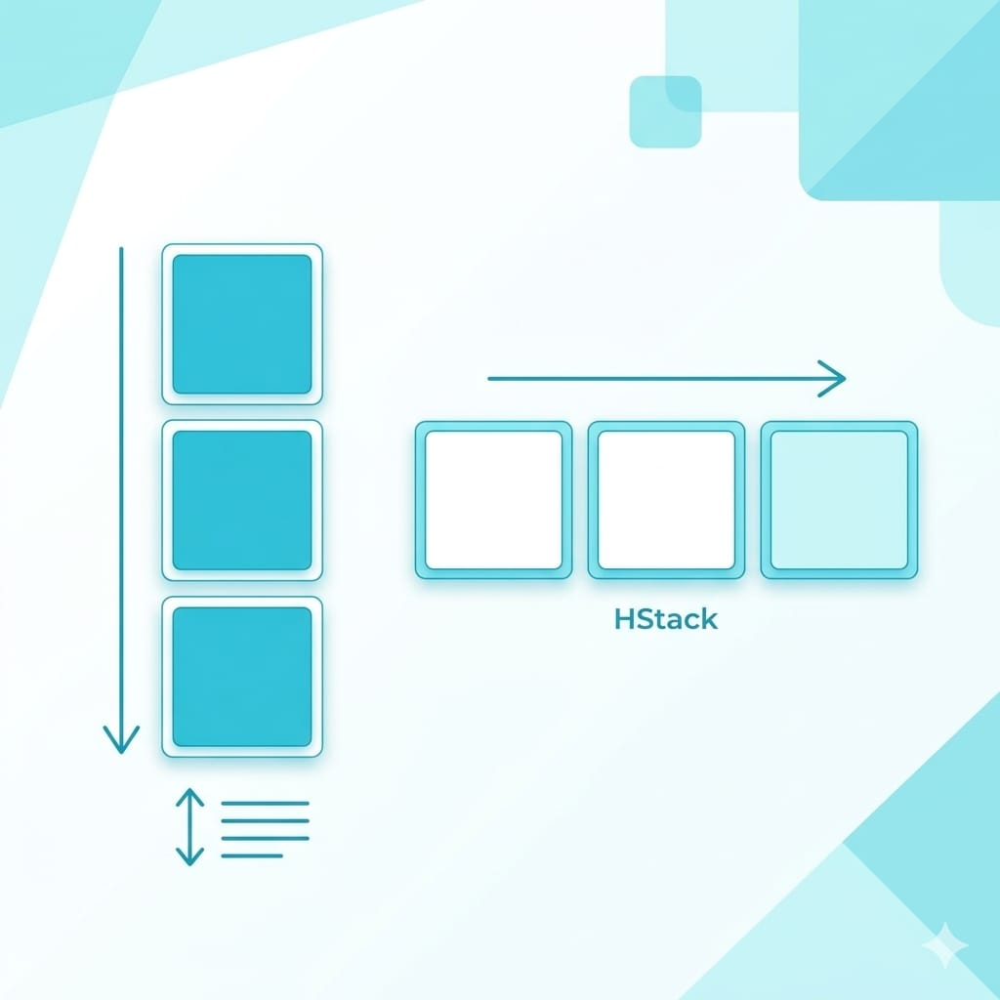

前兩篇我們裝好了環境，也學了 Swift 語言基礎。現在到了最有成就感的一步——用 SwiftUI 做出第一個真的看得到、點得到的 App。
這篇會帶你認識 SwiftUI 怎麼描述畫面、常用的元件與版面，最後做一個會互動的小 App（一個計數器：按按鈕、數字就加一）。做完你會很有感，因為它真的動起來了。
先建立一個 App 專案
這篇開始我們要做的是真正的 App，不是上一篇的 Playground（練功房），所以先建一個 App 專案。跟上一篇建 Playground 一樣的入口，只是這次選 App：
打開 Xcode 歡迎畫面，點 New Project 旁邊的小箭頭，選 App。
就這樣——Xcode 會直接幫你建好一個可以跑的空白 App，馬上進到主畫面。點左側的 ContentView，你會看到預設程式碼和右邊的即時預覽（顯示 Hello, world!）——大概像這樣：

專案名字叫「Untitled Project」，正常嗎？ 正常。用這個 App 捷徑建立，Xcode 會直接用預設值建好、不問你名稱，所以叫 Untitled Project——因為它其實還沒真正存到硬碟。學習、練習完全不影響，能跑就好。
>
想給它取名字（例如 FirstApp）最簡單的方法：按選單 File → Save（或 ⌘S）。因為專案還沒存過，Xcode 會跳出儲存視窗要你填名稱、選存放位置——你打的名字就會變成專案名。等於用「第一次存檔」補上捷徑當初跳過的取名步驟，很方便。
>
（另一個做法是一開始就走完整路徑建立：New Project 選單點 Choose Template… → App → Next → 填 Product Name → Create，見 iOS-1。兩種都行，用 File → Save 最快。）
接下來我們要做的，就是把這個 ContentView 的內容改成我們自己的畫面。
一、SwiftUI 的核心概念：View
在 SwiftUI 裡，畫面上的每一個東西——一段文字、一個按鈕、整個頁面——都是一個 View（視圖）。你用「宣告」的方式描述畫面長怎樣，SwiftUI 幫你畫出來。
新建一個 SwiftUI 專案時，Xcode 會自動給你這樣一段：
import SwiftUI
struct ContentView: View {
var body: some View {
Text("Hello, world!")
}
}拆解一下：
struct ContentView: View：定義一個叫 ContentView 的視圖。var body: some View：這裡面放的就是「畫面內容」，SwiftUI 會顯示 body 裡的東西。Text("Hello, world!")：一個顯示文字的 View。
右邊的預覽（Preview）會即時顯示畫面長怎樣，你改程式碼、預覽跟著變，不用每次都重跑，超方便。
二、常用元件：文字、按鈕、圖片
SwiftUI 內建很多現成元件，先認識最常用的幾個：
// 文字
Text("你好，智慧喵")
.font(.title) // 字體大小
.foregroundColor(.blue) // 文字顏色
// 按鈕
Button("點我") {
print("按鈕被按了") // 按下去要做的事寫在這裡
}
// 系統圖示（SF Symbols，Apple 內建幾千個）
Image(systemName: "star.fill")
.foregroundColor(.yellow)那個點開頭的寫法（.font、.foregroundColor）叫 modifier（修飾符），用來調整 View 的外觀。你可以一個接一個串起來，像在幫元件「加裝飾」。
三、版面排列：把元件擺好
單一元件會了，怎麼把多個元件排在一起？SwiftUI 用三個「容器」：

- VStack：垂直堆疊（Vertical），元件由上往下排。
- HStack：水平排列（Horizontal），元件由左往右排。
- ZStack：疊在一起（Z 軸），元件前後重疊。
VStack {
Text("標題")
.font(.title)
Text("副標題")
.foregroundColor(.gray)
Button("開始") {
print("開始")
}
}這段會把標題、副標題、按鈕由上到下排好。把 VStack 換成 HStack，它們就會變成左右排列。用這三個容器互相組合，就能排出各種版面。
四、加入互動：@State 讓畫面會反應
到這裡畫面都還是「死的」。真正的 App 要能反應使用者操作——這就要用到 SwiftUI 很關鍵的觀念：狀態（State）。
我們來做一個計數器：畫面顯示一個數字，按按鈕就加一。
import SwiftUI
struct ContentView: View {
@State private var count = 0 // 狀態：這個數字會變
var body: some View {
VStack(spacing: 20) {
Text("目前數字：\(count)")
.font(.largeTitle)
Button("加一") {
count += 1 // 改變狀態
}
.font(.title)
}
}
}關鍵在 @State 這個標記：
- 它告訴 SwiftUI「這個變數會變動」。
- 當
@State變數的值改變，SwiftUI 會自動重新畫畫面。
所以當你按下「加一」、count 從 0 變成 1，畫面上的數字會自動跟著更新——你不用手動去改畫面上的文字，SwiftUI 幫你做了。這種「資料變、畫面自動跟著變」的機制，是 SwiftUI 最核心也最強大的地方。
把這段貼進 Xcode，按執行，在模擬器上按按鈕看數字跳動——這就是你的第一個互動 App。
五、動手改改看
做完計數器，試著自己改改，手感會長很快：
- 加一個「減一」按鈕（
count -= 1）。 - 加一個「歸零」按鈕（
count = 0）。 - 把數字的顏色、字體改一改。
- 用 HStack 把「加一」「減一」兩個按鈕排成左右並排。
改壞了也不怕，這就是學習。SwiftUI 的即時預覽讓你改一點看一點，試錯成本很低。
六、把 App 裝到你自己的 iPhone
在模擬器上跑很方便，但把 App 裝到自己手上那支真 iPhone、實際用手指點——那個「這是我做的」的感覺完全不一樣。而且模擬器測不了的東西（相機、真實觸控、效能感受）也要靠實機。
好消息是：用免費的 Apple ID 就能裝到自己的手機，不用先付費加入開發者計畫。步驟如下。
步驟 1：在 Xcode 登入 Apple ID
點螢幕最左上角的 Xcode 選單（不是 File 那個選單，是最左邊 App 名稱那個）→ Settings…（快捷鍵 ⌘ + , 逗號；舊版 Xcode 這裡叫 Preferences…，是同一個東西）→ 切到 Apple Accounts 分頁（舊版叫 Accounts），用你的 Apple ID 登入（就是平常那個，免費的）。登入後它會自動幫你建立一個「個人團隊（Personal Team）」，簽署要用到。
步驟 2：設定專案的簽署
點左側專案 → 選 Signing & Capabilities 分頁：
- 勾選 Automatically manage signing（自動管理簽署）。
- Team 選你剛登入的那個帳號（個人團隊）。
- 如果出現 Bundle Identifier 衝突的紅字，把它改成獨一無二的字串（例如
com.你的名字.counter）就好。
步驟 3：用線材接上 iPhone
用傳輸線把 iPhone 接上電腦。第一次接，手機會跳出「是否信任這台電腦」，點「信任」並輸入手機密碼。
步驟 4：開啟 iPhone 的開發者模式
較新的 iOS 需要手動開啟開發者模式：手機 設定 → 隱私權與安全性 → 開發者模式，打開它，手機會要求重新啟動。（舊版 iOS 沒有這個選項，可略過。）
關掉開發者模式，App 會不能用嗎？ 會——你用 Xcode 裝的 App 需要開發者模式開著才能打開，關掉後它們會被系統擋住。但 App 沒有被刪除，重新打開開發者模式就又能用了，不用重裝。（從 App Store 正常下載的 App 不受影響，開發者模式只管你自己側載的那些。）
>
要不要平常關掉？ 開發者模式打開等於放寬了一道系統防線，所以 Apple 預設是關的。實務建議：開發測試那段開著、一陣子不碰開發就關掉比較安全，要用時再開即可（App 不會不見）。如果你天天開發，一直開著也行，自己知道防線是放寬狀態就好。
步驟 5：選裝置、執行
回到 Xcode，把上方的執行目標從模擬器改成你的 iPhone（會顯示你的手機名稱），按執行 ▶。
很可能遇到的錯誤：版本不符。 按下執行後，你可能會看到類似這樣的警告：
你的 iPhone 是 iOS 18.4.1，不符合 App 的 iOS 27.0 deployment target。
意思是：新版 Xcode 預設把 App 的「最低支援版本」設得很高（例如 27.0），但你的手機沒那麼新，所以裝不上去。不用升級手機，把 App 的最低版本調低就好：
- 點左側最上方的藍色專案圖示（例如
FirstApp）。 - 選 TARGETS 下的專案名 → General 分頁。
- 找到 Minimum Deployments（最低部署版本）的 iOS 欄位。
- 把它從 27.0 改成一個比你手機版本低的數字，例如 17.0（你手機是 18 以上就選 17，保險）。
改完再按執行 ▶，就能裝上去了。（設低一點也代表你的 App 能支援更多舊手機，學習階段這樣最省事。）
可能會跳出「codesign 想存取鑰匙圈」要你輸入密碼。 這是 Xcode 要用你的開發憑證幫 App 簽署，需要打開 Mac 的鑰匙圈保險箱。這裡要輸入的是你這台 Mac 的登入密碼（開機、解鎖 Mac 用的那組），不是 Apple ID 密碼。輸入後建議按 「永遠允許」，之後就不會每次都跳出來煩你。這是正常且安全的步驟。
步驟 6：在手機上「信任開發者」
第一次裝，App 會裝上去但點不開，出現「不受信任的開發者」。到手機 設定 → 一般 → VPN 與裝置管理，找到你的 Apple ID、點「信任」。再回桌面點開 App——你做的計數器就跑在你自己的 iPhone 上了。
免費 Apple ID 的兩個限制
用免費帳號裝實機很方便，但要知道兩個限制（這也是為什麼上架要付費帳號）：
- 憑證只有 7 天：7 天後 App 會失效、打不開，重新從 Xcode 裝一次即可（開發階段其實還好）。
- 同時最多 3 個 App：指「同時」裝在裝置上的數量，不是總次數。移除一個舊的（長按圖示→移除 App），就空出名額可以再裝新的，可以一直輪替、沒有次數上限。另外，同一個 App 一直重裝更新算同一個、不佔多個名額，只有不同的 App 才各佔一個。
這些限制對「學習、自己測試」完全夠用。等你要讓 App 長期留在手機、或給別人裝，就是後面 iOS-5 上架篇 講的付費帳號 + TestFlight 的範圍了。
這一步大約要花多久？
SwiftUI 做出第一個 App 並熟悉基本元件，抓 2~3 週。建議這樣練：
- 先把計數器打出來、跑起來。
- 照上面「動手改改看」逐項試。
- 再挑戰一個稍大的小專案，例如「BMI 計算機」（輸入身高體重、按鈕算出結果）——它會用到你目前學的文字、輸入、按鈕、狀態，是很好的綜合練習。
這階段的目標是對「刻畫面 + 狀態驅動」有手感。之後不管做什麼 App，畫面這一塊的底層邏輯都是這一套。
下一篇
現在你的 App 能顯示、能互動了，但資料一關掉就沒了，也還不會跟外界溝通。下一篇進入 資料儲存與串接網路 API——讓 App 能記住東西、能從網路抓資料，這是它從「玩具」變成「實用工具」的關鍵一步。
你已經做出第一個會動的 App 了，這是很大的里程碑。下篇見。🐾
系列導覽
- 📚 回到 App 開發完整指南 全系列目錄
- ⬅️ 上一篇：Swift 語言基礎
- ➡️ 下一篇：讓 App 記住資料、連上網路